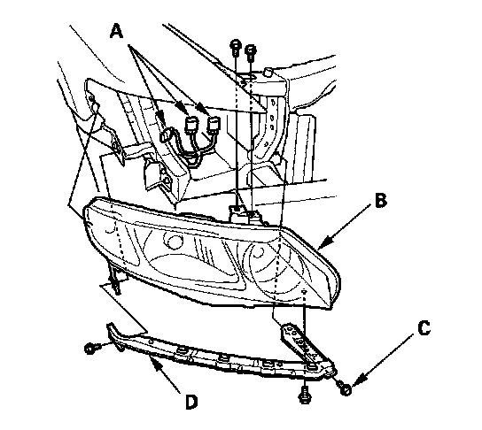

Headlamp: Service and Repair
Headlight Replacement1. Remove the front bumper.

2. Remove the connectors (A) from the headlight assembly (B).
NOTE: The illustration shows the 4-door, the 2-door is similar.
3. Remove the four bolts, then remove the headlight.
4. Remove the bolt (C) and the corner upper beam (D) from the headlight.
5. Install the headlight in the reverse order of removal.
6. After replacement, adjust the headlight to local requirement.